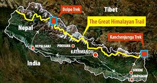
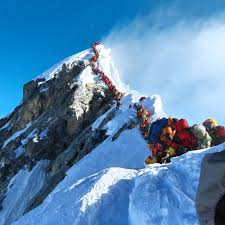
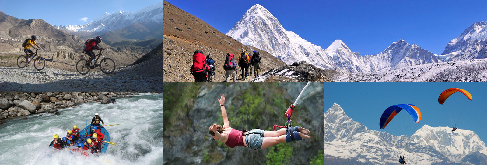
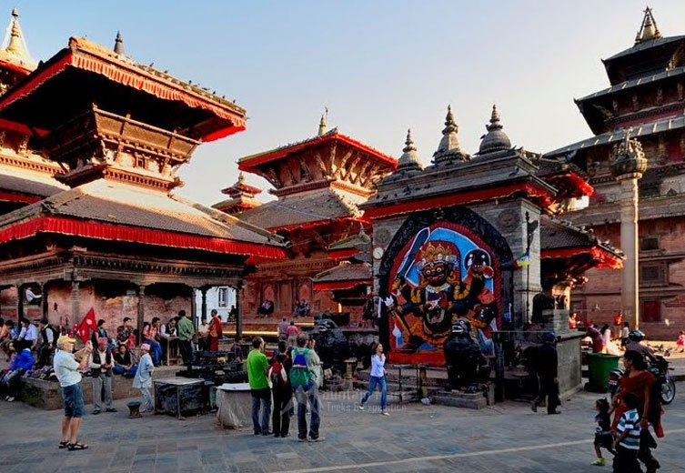
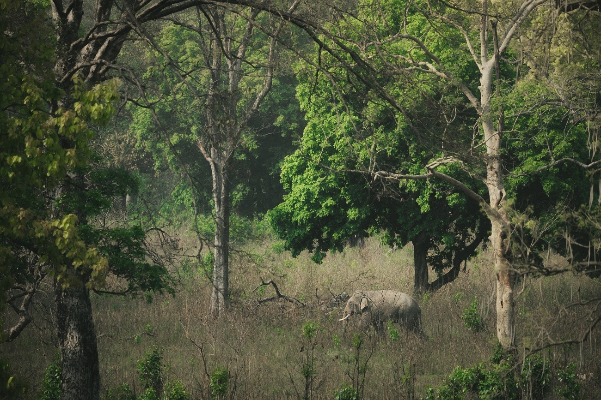
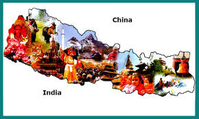
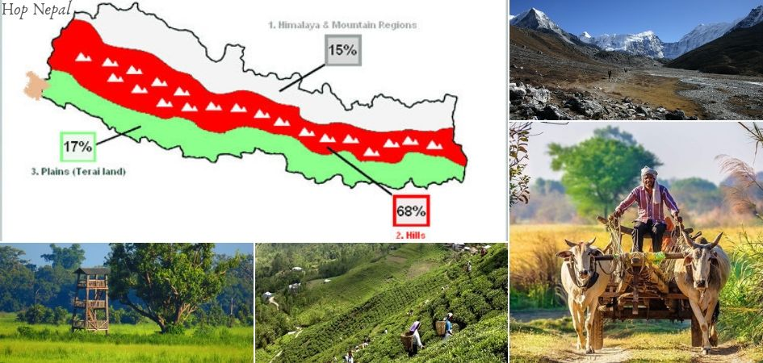
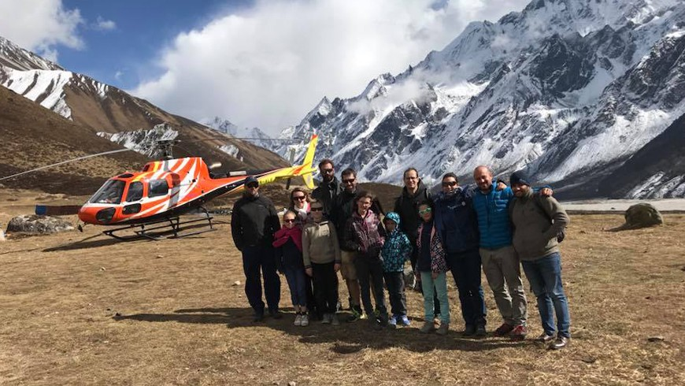
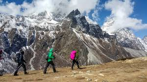

Why Tour in Nepal?
-
Great Himalayan Trail
The region form Mt. Kanchenjunga in the east to Mt. Saipal in the west is known as the Great Himalayan Trail. It includes Kanchenjunga Conservation Area, Makalu Barun National Park and Sagarmatha National Park of eastern Nepal. Similarly, mountainous areas like Lantang, Gosainkunda, Gaurishankar located in the middle region of the country lie in this trail. The touristic destinations of Manang, MUstang, Mugu, Dolpa also come under the great Himalayan Trail. Nepal Tourism Board has recommended this area as a touristic destinations. By the adequate publicity and development of touristic infrastructures in this region, number of tourist can be increased as expected.
-
High Mountain Peaks
Every year many tourists from different countries of the world come to view Mt.Everest, the highest mountain peak in the world. They can view it by mountain flight. Many individuals and groups also come to climb the mountain. There are 14 mountains in the world having the height above 8,000 meter above the sea level. Among them eight mountain peaks are in Nepal.
-
Adventure Tourism
Nepa is very suitable place for adventure tourism. There are many fast flowing rivers which are suitable for rafting. Bungee jumping is another attraction for tourist in Nepal. Besides these trekking, mountaineering, kayaking, cycling, rock climbing, canoeing, paragliding etc are major areas of adventure tourism in Nepal.
-
Religious and Historical Sites
Nepal is famous as the religious centre for both the Hindus and Buddhists of the world. Lumbini, Pashupatinath, Manakamana, Muktinath, Janaki Temple, Sworgadwari, Ridi, Ugratara, Krishna Mandir, Changunarayan etc are the famous religious sites. Likewise, there are several ancient monuments and sites in Nepal which attract the tourists. Ashoka Pillar of Lumbini, Changunarayan Temple, Bhaktapur Durbar Square, Basantapur Durbar Square, Krishna Mandir, Patan Durbar Square etc reflect the ancient art and architecture of Nepal
-
Natural Vegetation and Wildlife
Though it is small in size, varieties of climate, vegetation and topography are found here. Many parts of the country have been developed as National Parks, Conservation Area and Wildlife Reserves. A huge number of tourists are attracted to observe varieties of animals and birds.Though it is small in size, varieties of climate, vegetation and topography are found here. Many parts of the country have been developed as National Parks, Conservation Area and Wildlife Reserves. A huge number of tourists are attracted to observe varieties of animals and birds.
-
Cultural Diversity
The structure of Nepalese society is multi-ethnic, multi-lingual and multi-culture. Every ethnic group has its own distinct culture, festival and way of living. The are 125 castes of people living in Nepal with their varieties of culture and tradition. Every year many tourist visit to observe this cultural diversity.The structure of Nepalese society is multi-ethnic, multi-lingual and multi-culture. Every ethnic group has its own distinct culture, festival and way of living. The are 125 castes of people living in Nepal with their varieties of culture and tradition. Every year many tourist visit to observe this cultural diversity.
-
Geographical and Climatic Diversity
Nepal has diversified topography. Many beautiful Himalayas, deep gorge, valley, plain, hills, fast flowing rivers etc have made Nepal rich in natural beauty. The climate also differs when one travels from south to north. It is neither too hot nor too cold.
Different international tourism journals have listed Nepal as one of the important tourist destinations of the world which has to be visited at least once in a life time. 'Nepal Geographic Traveller' listed Nepal in 6th place as tourist destination that should not be missed in 2016 AD. Thus, there is a great possibility of tourism in Nepal. But it has not been able to flourish due to many problems.
How To Visit In Nepal?

-
Via Vehicles

Tourism is about transport. Tourism might be defined as travelling in order to access a leisure experience - from home or wherever you are staying to a tourist attraction, whether that is a single attraction and places to visit.
-
Via Air
The flight usually lasts between 50 minutes up to an hour. The planes take off either from TIA, Kathmandu. During the flight, you will catch a glimpse of 20 of the highest peaks to the East of Nepal starting from the Langtang Lirung peak which is the closest peak to Kathmandu.
-
Via Foot
Over 3 million guests have attended one of our 200,000 tours around the world. For over 15 years, visitors have loved us because we’re more than just guided walking tours; we also offer expert advice from our local guides to help you plan your trip.